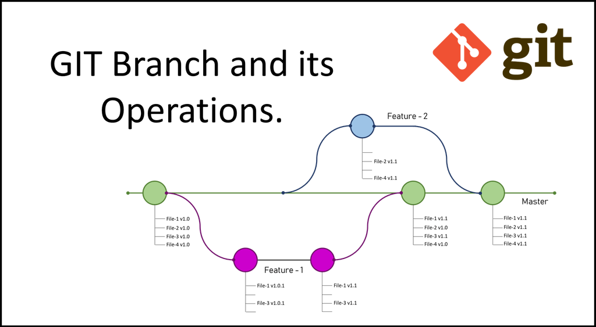

3 Git Branching
Branching provides a simple way to maintain multiple, side-by-side versions of the files in a repository. Conceptually, branching a repository creates a copy of the codebase in its current state that you can work on without affecting the primary version from which it was copied. This alows you to work down multiple paths without affecting the main (or other) codebase.

To see a list of branches in your repository
$ git branchTo create a new branch
$ git checkout -b hotfixNew branches are created of the current working branch. To change branches use
$ git checkout <branch name>3.1 Merging Branches
When you merge a branch, git folds any changes that you made to files in an identified branch into the current working branch. It also adds any new files. When you perform a merge, a new commit will be automatically created to track the merge. To merge branches, commit any changes to the branch you want to merge (in this example, the ‘hotfix’ branch) then checkout the branch into which you want to merge (for example, master), and then execute a merge command.
$ git commit -m 'commiting staged files in hotfix branch'
$ git checkout master
$ git merge hotfix
3.2 Branching Workflows